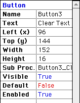
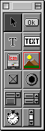

Editor's Note
I've changed the layout a tad this issue. Instead of the popupmenu on top for navigation, I've created a more standard sidebar with links. I think it looks much nicer than the old setup, which was, dare I say, passé. This is also because Internet Explorer 4.5 users were reporting problems with the JavaScript behind the popupmenu (I don't care what Steve Jobs says–IE 4.5 has some serious problems. Not that that stops me from using it...).
And now for my stunning opinion-of-the-month™.
 As most of you know, I find RB to be incredibly unstable. However, there aren't any alternatives for macs, so I've lived with this horrible stability problem for over a year. But recently, I became aware of an alternative that actually came before RB: Visual Mac Standard Basic (www.macstandardbasic.com).
 VMSB may not look better than RB at first glance, but underneath that interface is a language and functionality that's vastly superior to RB. As you can see from its toolbar to the right, it doesn't have nearly as many controls, but it more than makes up for that by the power of these controls. After all, what more do you really need that next, graphics, buttons, and timers? Sockets can be used in code, and work far better than RB's do. And to add to this, it has invaluable features like a Say command, which speaks text, and the ability to move sprites through a window without blanking the screen. Ahh, if only RB had these abilities...
And don't even get me started on the bugs issue. In the month that I've been using VMSB, it hasn't crashed a SINGLE TIME! That's unheard of in RB. And the tech support is great. They were prompt and had good responses to all my questions.
What are some other benefits? Well, the properties window is much nicer. I really like those colors, and the big type makes it easy to read.
So, simply put, RB sucks. VMSB rules. End of Story. This will be the last issue of RBM. The next issue will be VMSB Monthly. I hope everyone switches over. They won't be dissappointed.
April Fools!
- Dan Vanderkam